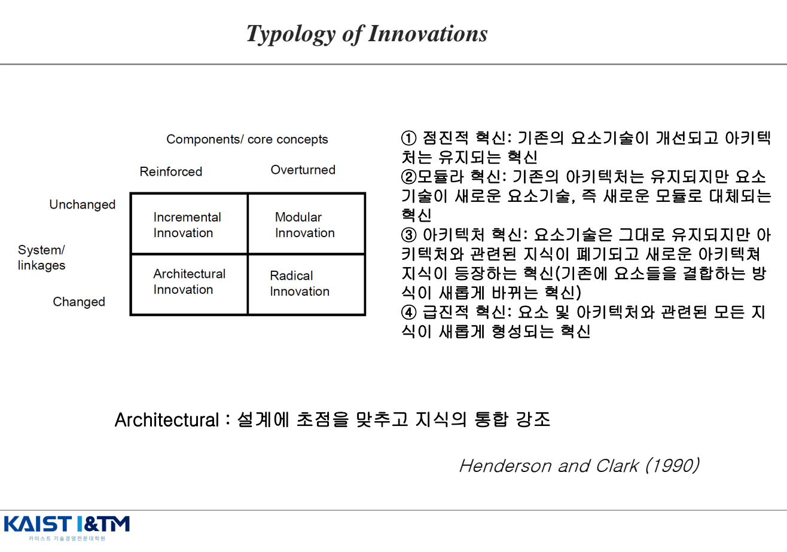
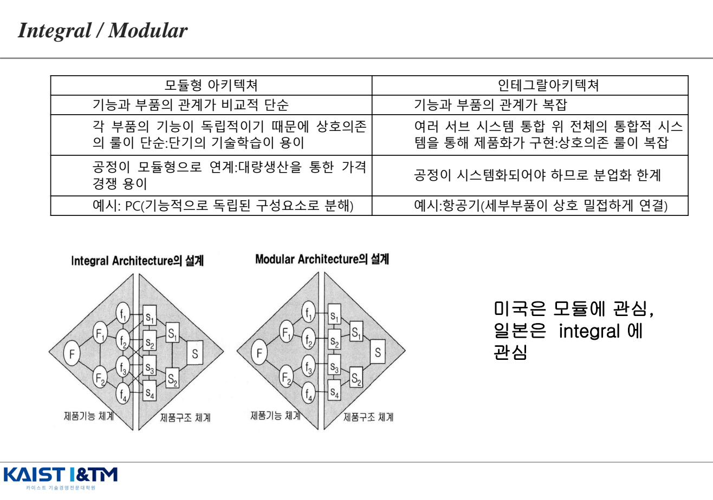
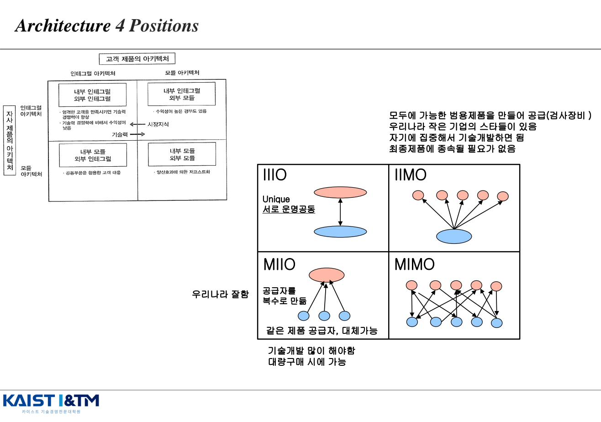
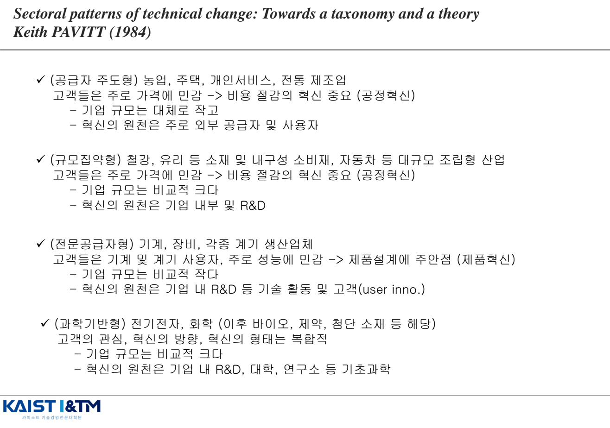
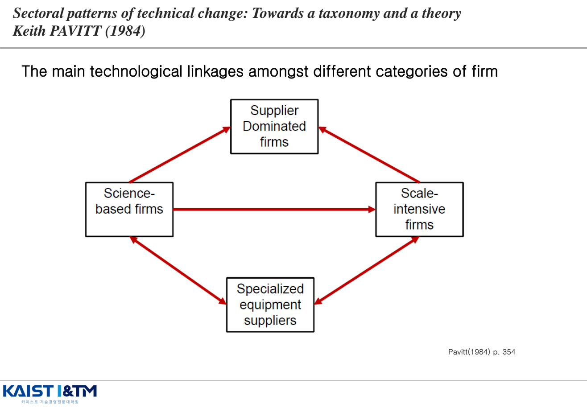

Type, Architecture & Taxonomy · 혁신의 유형과 분류
혁신을 한 덩어리로 보면 전략을 짤 수 없다. IM04는 혁신을 여러 축으로 쪼개어 보는 방법을 다룬다. 목적(제품 vs 공정), 영향(점진 vs 급진), 아키텍처(Integral vs Modular), 그리고 Henderson & Clark의 2×2 매트릭스와 Pavitt의 산업별 혁신 패턴 분류까지. 모두 시험 빈출 영역이다.
학습 개요
- 제품 혁신 vs 공정 혁신의 정의와 차이
- 점진적(Incremental) vs 급진적(Radical) 혁신
- Henderson & Clark의 2×2 유형: Incremental / Modular / Architectural / Radical
- Integral vs Modular 아키텍처의 특성과 비교
- Architecture 4 Positions(IIIO, IIMO, MIIO, MIMO) — 자사·고객사 관점
- Pavitt의 산업 분류 4가지: 공급자 주도형, 규모 집약형, 전문 공급자형, 과학 기반형
1. 혁신의 목적별 분류 — 제품 혁신 vs 공정 혁신
| Product Innovation (제품 혁신) | Process Innovation (공정 혁신) | |
|---|---|---|
| 대상 | 제품 자체의 속성·기능 변경 | 제품을 만드는 생산·서비스 프로세스 개선 |
| 고객이 인지하는 변화 | 있음 — 외부에서 보임 | 대부분 없음 — 내부 효율성 |
| 주된 추구 | 차별화(Differentiation) | 비용 절감(Cost Reduction) |
| 예시 | 아이폰의 신기능, 새 모델 출시 | 대량 생산 라인 자동화, JIT |
이 분류는 Utterback & Abernathy(1975)의 동태적 모델(IM05에서 다룸)에서 더 깊이 발전된다. 제품 혁신과 공정 혁신은 산업 라이프사이클 단계에 따라 강조점이 달라진다.
2. 혁신의 영향별 분류 — 점진적 vs 급진적
| Incremental Innovation (점진적) | Radical Innovation (급진적) | |
|---|---|---|
| 변화의 크기 | 제품·라인의 작은 연속적 개선 | 기존 패러다임을 깨는 완전히 새로운 혁신 |
| 지식 영향 | 기존 기술·지식 강화 | 기존 기술·지식 폐기·대체 |
| 리스크 | 낮음 | 높음 |
| 예시 | 스마트폰 카메라 화소 증가 | 증기기관차 → 자동차, 필름카메라 → 디지털카메라 |
1990년 이전까지 혁신 분류는 사실상 이 1차원 분류(Incremental ↔ Radical)에 그쳤다. 그런데 이 분류만으로는 풀리지 않는 의문이 있었다.
"왜 앞선 기업이 후속된 기업에게 추월될까?"
이 질문에 답하기 위해 Henderson & Clark(1990)이 2×2 매트릭스로 분류를 확장한다.
3. Henderson & Clark의 2×2 혁신 유형 (1990) EXAM
Rebecca Henderson과 Kim Clark는 반도체 회사를 연구하면서 한 가지 사실에 주목했다. "부품 자체는 변하지 않았는데 부품들의 연결 방식이 바뀐 혁신"이 존재하며, 이런 종류의 혁신에서 기존 기업이 신생 기업에 패배한다. 이를 설명하기 위해 두 사람은 기존 분류에 아키텍처(Architecture) 축을 추가했다.

- 가로축: Components/Core Concepts — 부품·핵심 개념이 강화(Reinforced)되는가 전복(Overturned)되는가
- 세로축: System/Linkages — 부품 간 연결(아키텍처)이 변하지 않는가(Unchanged) 변하는가(Changed)
| 유형 | 핵심개념(부품) | 아키텍처(연결) | 설명 | 예시 |
|---|---|---|---|---|
| ① Incremental (점진적) | 강화 | 유지 | 기존 요소 기술이 개선되고 아키텍처는 유지되는 혁신 | 스마트폰의 프로세스 속도 향상, 배터리 사용시간 증가 |
| ② Modular (모듈러) | 전복 | 유지 | 기존 아키텍처는 유지되지만 요소 기술이 새로운 모듈로 대체되는 혁신 | 아날로그 전화기 → 디지털 전화기 (구조는 같고 모듈만 교체), Clockwork radio |
| ③ Architectural (구조/아키텍처) | 강화 | 변화 | 요소 기술은 그대로 유지되지만 아키텍처와 관련된 지식이 폐기되고 새로운 아키텍처 지식이 등장 | Sony Walkman (기존 부품을 새로운 방식으로 결합), 하드드라이브 크기 축소 |
| ④ Radical (급진적) | 전복 | 변화 | 요소 및 아키텍처 관련 모든 지식이 새롭게 형성되는 혁신 | 새로운 지배적 설계(Dominant Design) 등장 — 구성요소 지식·구조적 지식 모두 파괴 |
왜 이 분류가 중요한가
아키텍처 혁신은 겉으로는 작은 변화처럼 보이지만 기존 기업에게는 치명적이다. 기존 기업의 조직 구조와 의사소통 채널 자체가 옛 아키텍처를 반영하고 있기 때문에, 새 아키텍처를 받아들이려면 조직 전체를 바꿔야 한다. 이것이 "앞선 기업이 후속 기업에게 추월되는" 메커니즘 중 하나이며, 이후 Christensen의 파괴적 혁신(IM07)과 연결된다.
Henderson, R. M., & Clark, K. B. (1990). Architectural innovation. Administrative Science Quarterly, 35(1), 9-30. (12,500회+ 인용)
4. 제품 아키텍처 — Integral vs Modular (Ulrich, 1995)
Henderson & Clark이 혁신을 분류하기 위해 "아키텍처"를 도입했다면, Karl Ulrich는 모든 제품을 두 아키텍처 중 하나로 분류 가능하다고 본다. 이것이 공학자 관점의 제품 아키텍처 이론이다.
- Modular Architecture (모듈형): 제품의 기능과 부품 간 관계가 1:1로 단순. 각 부품이 독립적
- Integral Architecture (인테그랄형): 기능과 부품 간 관계가 복잡(many-to-many). 부품들이 서로 미세하게 조정되어 통합 설계됨

| Modular Architecture (모듈형) | Integral Architecture (인테그랄형) | |
|---|---|---|
| 기능-부품 관계 | 비교적 단순 (1:1) | 복잡 (many-to-many) |
| 상호의존 규칙 | 단순 → 단기 기술학습 용이 | 복잡 → 여러 서브시스템 통합 필요 |
| 생산 방식 | 공정이 모듈형 → 대량생산을 통한 가격 경쟁 용이 | 공정 시스템화 필요 → 분업화 한계 |
| 예시 | PC (기능적으로 독립된 구성요소로 분해) | 항공기 (세부 부품이 상호 밀접하게 연결) |
| 국가별 강점 | 미국이 강함 | 일본이 강함 (장인 정신, 모노즈쿠리) |
5. Architecture 4 Positions (Fujimoto)
Fujimoto Takahiro(Handerson과 같이 공부함)는 한 단계 더 나아가, 자사 제품의 아키텍처와 고객사 제품의 아키텍처를 따로 보는 2축 매트릭스를 제시했다. 이로부터 4가지 위치(IIIO, IIMO, MIIO, MIMO)가 나온다.

| 유형 | 자사 / 고객사 | 특징 |
|---|---|---|
| IIIO — Integral inside / Integral outside | I / I | 부품들을 미세 조정하여 제품마다 최적화 설계. "서로 운명공동체". 엄격한 고객을 만족시키면 기술력 향상, 그러나 기술력 경쟁력에 비해 수익성은 낮음 |
| IIMO — Integral inside / Modular outside | I / M | 모두에게 공급 가능한 범용 제품을 만들어 공급(예: 검사 장비). 우리나라 작은 기업의 스타들이 여기. 최종 제품에 종속될 필요 없음 |
| MIIO — Modular inside / Integral outside | M / I | 공동 부품을 활용한 고객 대응. "우리나라 잘함". 공급자를 복수로 만듦. 같은 제품 공급자, 대체 가능 |
| MIMO — Modular inside / Modular outside | M / M | 양산 효과에 의한 저코스트화. 기술 개발을 많이 해야 하고, 대량 구매 시에 가능 |
아키텍처와 조직의 관계
"Architecture에 따라 조직의 특성이 결정된다" — Conway's Law처럼, 미국은 모듈형에 강점, 일본은 인테그랄형에 강점. 이는 단순한 우연이 아니라 조직 문화와 아키텍처가 공진화한 결과다.
6. Pavitt의 산업별 혁신 패턴 분류 (1984) EXAM
Keith Pavitt는 1984년 한 가지 질문을 던졌다. "혁신의 다양한 유형이 산업 분야별로 다른 것이 아닐까?" 1945~1979년 영국에서 발생한 약 2,000개의 중요한 혁신 데이터를 분석한 결과, 산업별로 혁신의 원천과 패턴이 명확히 달랐다. 이것이 Pavitt Taxonomy 4가지 유형이다.
6.1 Pavitt의 데이터와 발견
- 주요 지식(아이디어) 출처: Intra-firm (58.6%) > Other firm (34.0%) > Public Infrastructure (7.4%)
- 제품 혁신: 부문 외 활용되는 혁신 / 공정 혁신: 부문 내 사용되는 혁신
- 회사 규모·기술 다양성: 큰 회사일수록 혁신이 활발하지만 산업별 차이가 커 일반화 어려움
6.2 Pavitt 4가지 산업 유형

| 유형 | 대표 산업 | 특징 | 혁신 원천 |
|---|---|---|---|
| ① 공급자 주도형 (Supplier-Dominated) |
농업, 주택, 개인서비스, 전통 제조업 | 고객은 가격에 민감 → 비용 절감(공정혁신) 중요. 기업 규모 대체로 작음 | 외부 공급자와 사용자 |
| ② 규모 집약형 (Scale-Intensive) |
철강, 유리 등 소재, 내구성 소비재, 자동차 등 대규모 조립형 | 고객은 가격에 민감 → 비용 절감(공정혁신) 중요. 기업 규모 비교적 큼 | 기업 내부 R&D |
| ③ 전문 공급자형 (Specialized Suppliers) |
기계, 장비, 각종 계기 생산업체 | 고객은 기계·계기 사용자, 주로 성능에 민감 → 제품 설계(제품혁신) 중심. 기업 규모 비교적 작음 | 기업 내 R&D + 고객(User innovation) |
| ④ 과학 기반형 (Science-Based) |
전기전자, 화학 (이후 바이오, 제약, 첨단 소재) | 고객 관심·혁신 방향·혁신 형태가 복합적. 기업 규모 비교적 큼 | 기업 내 R&D + 대학·연구소 등 기초과학 |
6.3 기업 카테고리 간 기술 연계

4가지 유형은 독립적으로 존재하지 않는다. Science-based firms는 새로운 기술을 공급하고, Specialized equipment suppliers가 그것을 장비화하여, Scale-intensive firms와 Supplier-dominated firms가 이를 활용한다. 즉 혁신은 산업 간 흐름(flow)으로 봐야 한다.
참고 — 정보집약형 (Pavitt 1990 추가)
금융, 유통, 출판 등 IT 관련 제품 및 서비스. 혁신의 원천은 기업 내 IT 부서, 외부 공급자. 후속 연구자들이 Pavitt 분류를 확장하면서 추가했다.
6.4 특허의 NPL (Non-Patent Literature) — 과학-기술 연계 측정
Pavitt 분류와 관련해 자주 나오는 개념. 특허에 인용된 참고문헌 중 비특허문헌(논문 등)의 비중을 통해 그 기술이 얼마나 기초과학과 가까운지를 측정할 수 있다. NPL 비중이 높을수록 과학 기반형에 가깝다.
예상 문제 매칭
📌 Henderson & Clark 2×2 유형 (예상문제집 핵심)
"Henderson & Clark(1990)의 혁신 유형 2×2 매트릭스를 설명하고, 특히 모듈러 혁신과 아키텍처 혁신의 차이를 사례와 함께 서술하시오."
답안 핵심:
- 등장 배경: "왜 앞선 기업이 후속 기업에게 추월될까?" → 기존 1차원 분류(incremental/radical)의 한계
- 두 축: 핵심개념(강화/전복) × 아키텍처(유지/변화)
- 네 가지 유형의 정의와 사례:
- Incremental: 핵심개념 강화 + 아키텍처 유지 (스마트폰 프로세서 성능 향상)
- Modular: 핵심개념 전복 + 아키텍처 유지 (Clockwork radio, 아날로그→디지털 전화기)
- Architectural: 핵심개념 강화 + 아키텍처 변화 (Sony Walkman)
- Radical: 둘 다 변화 (새로운 지배적 설계 등장)
- 실무적 함의: 아키텍처 혁신이 기존 기업에 치명적인 이유 — 조직 구조 자체가 옛 아키텍처를 반영하기 때문
📌 Pavitt의 산업 분류 (예상문제집 빈출)
"Pavitt(1984)의 산업별 혁신 패턴 분류 4가지를 산업 예, 혁신 유형(제품/공정), 기업 규모, 혁신 원천을 포함하여 설명하시오."
답안 핵심: 공급자 주도형 / 규모 집약형 / 전문 공급자형 / 과학 기반형 각각을 "대표 산업 + 가격vs성능 민감도 + 기업 규모 + 혁신 원천"의 4요소로 인출. 마지막에 NPL 개념 언급.
📌 Integral vs Modular 아키텍처
"Integral 아키텍처와 Modular 아키텍처의 차이를 기능-부품 관계, 생산 방식, 사례 측면에서 비교하시오."
답안 핵심: 기능-부품 관계 단순/복잡, 모듈형 대량생산 vs 인테그랄 통합 설계, PC vs 항공기, 미국 강점 vs 일본 강점.
📌 제품 혁신 vs 공정 혁신 / 점진 vs 급진
"혁신의 두 가지 기본 분류(목적별, 영향별)를 설명하시오."
답안 핵심: 목적별(Product/Process) + 영향별(Incremental/Radical). 후속으로 Henderson & Clark이 아키텍처 축을 추가한 흐름까지 잡으면 좋다.
※ 이 페이지의 모든 그림은 강의자료 IM04_Type_Architecture_Taxonomy.pdf에서 발췌한 것이며, 학습 목적으로만 사용된다.